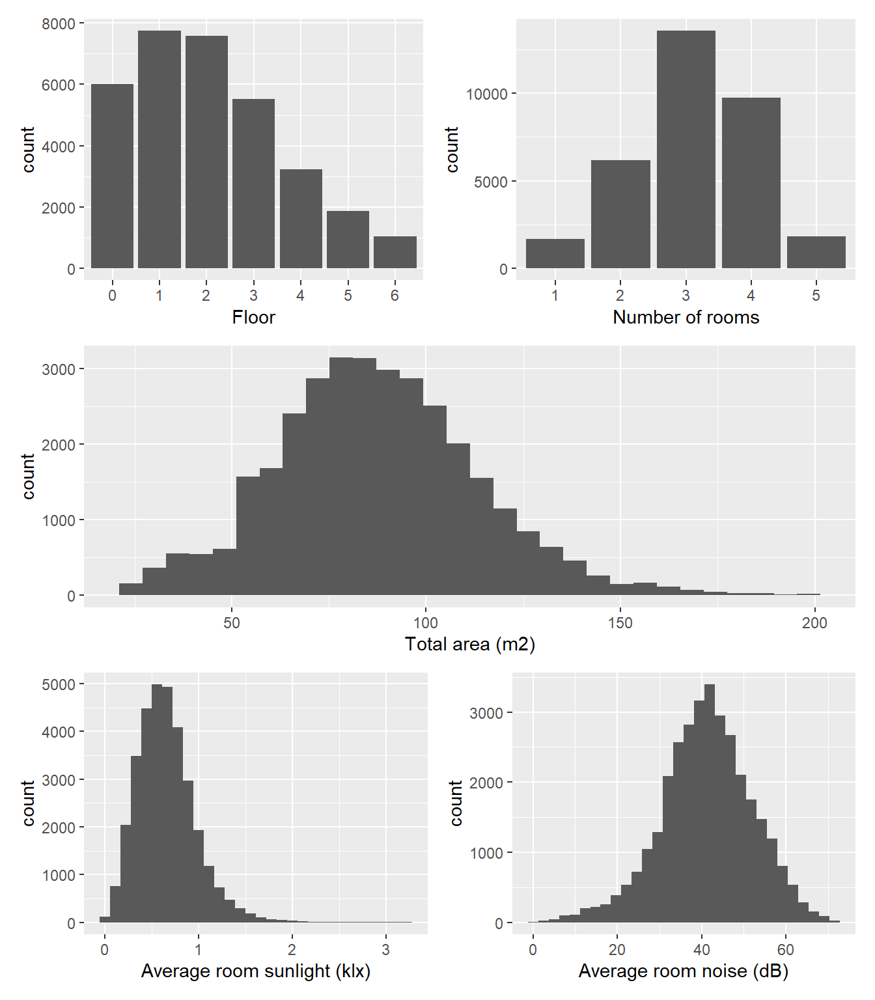
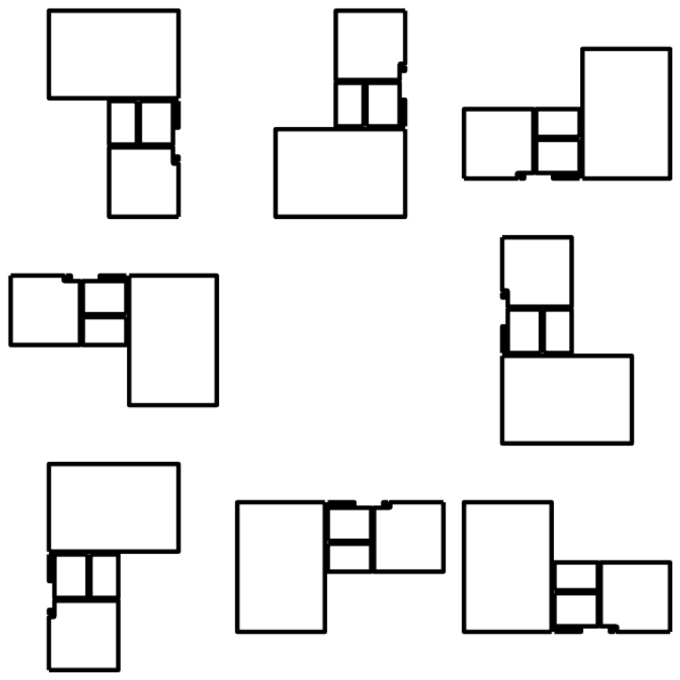
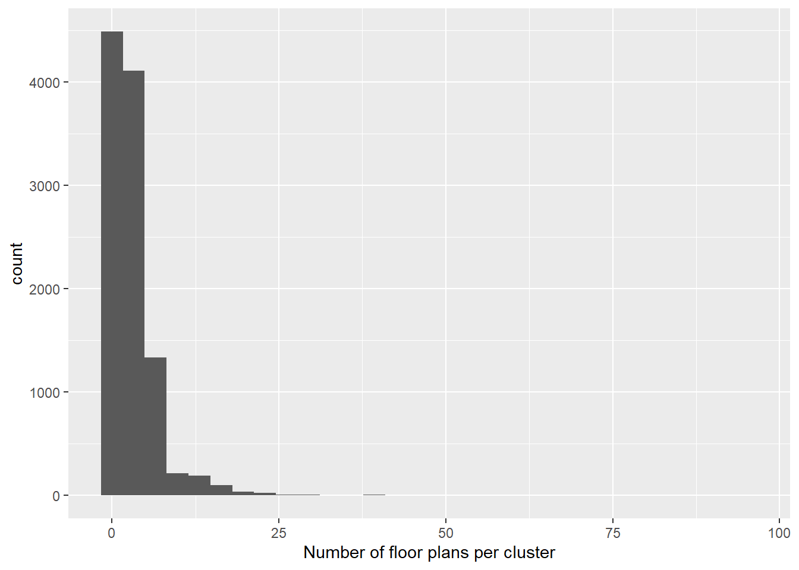

Data cleaning
Neufert 4.0
documentation
Descriptives
The Neufert 4.0 dataset comprises data from a total of N = 37,174 apartments.
In the first step, we excluded flats that were either underground or above 6th floor (n = 2,271), had a total are outside of the 25-200 m2 range (n = 1,094), lacked data on room noise (n = 4) or room sunlight (n = 4), or had a value of zero for either of these two variables (n = 810). As only a small number of flats (n = 387) had more than five rooms, these were also excluded. This resulted in a sample size of N = 32,990 apartments, whose characteristics are shown in Figure 1.
Shape clusters
To identify clusters that contain apartments of with the same layout, we devised the following algorithm:
First, to account for potential rotation of the apartments, we oriented them along the horizontal (x-axis) and the vertical (y-axis). This was done byt aligning the longest polygon edge within each apartments along the horizontal.
Next, we converted the vector graphics representation of the apartments to 224×224 black and white raster representation that contained only area geometries (rooms, corridors, shafts, balconies etc. but not walls, columns, doors, or windows). Each such 224×224 matrix contained only values of 0 (black) and 1 (white).
These matrices were then used to compare to get a measure of distance between the apartment geometries. The apartments were first grouped according to number of rooms. Within each group, we then selected a random apartment as a reference matrix (\(\mathbf{A}\)) and calculated the sum of squared difference between this reference and all other apartment matrices (\(\mathbf{B}\)):
\[SS = \sum_{i = 1}^{n}\sum_{j = 1}^{n}(\mathbf{B}_{ij} - \mathbf{A}_{ij})^2\]
where \(n\) = 224, the number of pixels per dimension.
After the initial aligning of the floor plans along the x and y axes, there remained eight possible orientations each floor plan could have (see Figure 2). For this reason, each floor plan matrix was transformed into eight different matrices that reflected these rotations and only then compared to the reference using the sum of squares measure. This resulted in eight distance values per floor plan, yielding an eight-dimensional difference space, with each floor plan representing a point in this space and the reference flat positioned at its origin.

In order to further expand this difference space, we selected another floor plan as reference and repeated this process. This floor plan was chosen from the middle of the distance distributions in the first iteration. Thee resulting 16-dimensional data set was then passed to the Self-Organising Map algorithm (SOM, Kohonen…) with a grid size equal to \(floor(\sqrt{n})\), where \(n\) represents the number of floor plans with a given number of rooms. This procedure yielded grid position for each of the analysed floor plans, clustering them according to shape.
The above-described algorithm produced a somewhat liberal clusters, occasionally grouping dissimilar floor plans into a single cluster and so a further step was implemented to refine the clustering. Within each of the SOM clusters, we started by designating the first (position was arbitrary) floor plan as the reference and once again calculated the distance between it and the eight orientations of all other floor plans in the same SOM cluster. If the smallest of the eight distance measures was less than an empirically determined threshold of 2,000, the floor plan in question was added to a cluster defined by the reference floor plan. Next, the first of the remaining floor plans that did not pass the threshold was designated a reference for the next cluster and the process repeated. Once all floor plans within the same SOM cluster were assorted, the algorithm was reiterated on the next SOM cluster.
While the “refinement” algorithm could have been applied to the raw, unclustered data, the benefit of first creating the SOM clusters was a massive reduction of apartment-to-apartment comparisons and thus of computational resources.
This procedure yielded 11,173 rotation- and translation-invariant clusters of geometrically identical floor plans. The number of floor plans per cluster ranged from 1 to 96 (see Figure 3).

Filtering observations
Once the data was sorted into clusters according to the geometry of floor plans, we removed apartments that were deemed as essentially duplicates with respect to the values of average room noise and average room sunlight. These essential duplicates were identified as follows:
First, we discretised the noise variable into categories by 5 dB increments and the sunlight variable by increments of 200 lx. Within each cluster and for each level of noise, we then retained one observation at every given level of the discretised sunlight variable (if available). The retained observation was the one with the lowest score on the original, continuous average room sunlight variable.
This further reduced the data set to the final size of n = 20,419 essentially unique apartments.